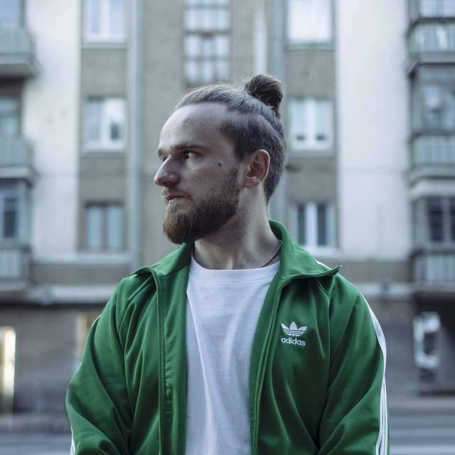

illia.ushanau
EN
RU
◐
Illia Ushanau
//
const
stack = [
"ComfyUI"
,
"n8n"
,
"image & video"
,
"model APIs"
];
640 px

HALFTONE · illia.jpg
01
/
video-ad.json
idle
inspector
▶ Run
LATENT SPACE
→ VISUAL FORM
02
/
03
/ R&D
04
/
05
/
06
/
07
/
Telegram ↗
dex530000@gmail.com
LinkedIn ↗
© 2026 Illia Ushanau